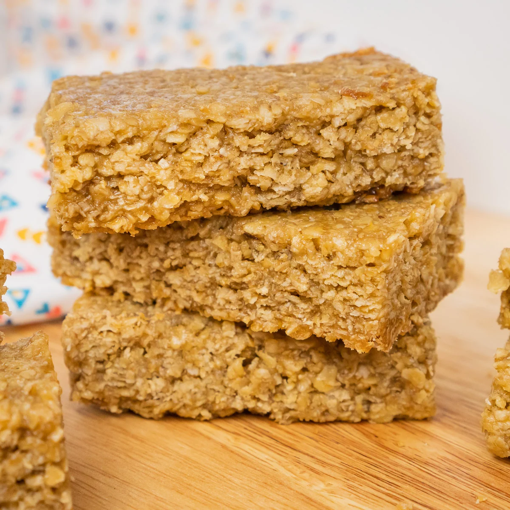

Flapjacks

Description
Bake these 4-ingredient flapjacks – they're easy to make and ready in half an hour. Add chocolate drops, desiccated coconut or sultanas, if you like
Ingredients
- Rolled oats
- Butter
- Brown sugar
- Golden syrup
Steps
- Heat the oven to 200C/180C fan/gas 6. Put the oats, butter, sugar and golden syrup in a food processor and pulse until mixed – be careful not to overmix or the oats may lose their texture.
- Lightly butter a 20 x 20cm baking tin and add the mixture. Press into the corners with the back of a spoon so the mixture is flat and score into 12 squares. Bake for around 15 mins until golden brown.